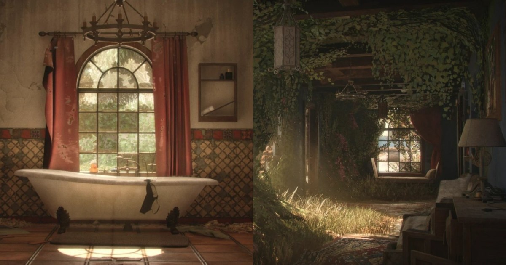

地中海廢墟場景拆解：模組建築、RGB 主材質與手工植被配置
作者以五個月完成《Mediterranean Echoes》地中海廢墟場景，先用比例白模規劃模組、飾條貼圖與平鋪材質，再透過 3ds Max、ZBrush、Substance 與 Unreal Engine 建構成品。

場景製作 ★★★★☆
完整分析
建築與材質技術流程
破牆採 Designer 程序材質、木件高模做成可重用 Trim Sheet，高模資料另烘到第二組 UV 輸出 RGB Mask，最後統合進單一主材質。
資產預算製作影響
專案以每公尺 512 像素和 2K 貼圖為常態，輪廓處才增加多邊形；小型物件使用 Atlas 與低解析度，Megascans 約占場景百分之五。
限制與取捨驗證
作者未使用 Nanite，地表植被風格失配後改用 Megascans，並指出 Designer 材質與植被反覆修改到最後；這些是五個月工期的主要挑戰。
BRIEF｜來源已驗證；證據深度較有限，完整分析會明確區分已知資訊與待驗證事項。